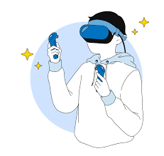
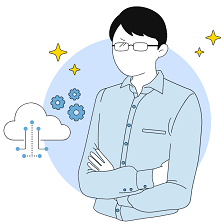

情報システム科(2年制)
| コンピュータの基本構成と動作の原理、基本的なシステム開発技法を学びます。ＩＴ業界では、関連する知識はもちろん、顧客対応力やチーム内でのコミュニケーション力も求められています。
業界を担う人材として、新たな価値を生み出し、あらゆる課題を解決できるシステムエンジニアを目指します！ |
|
|
ネットワークセキリュティ科(2年制)
| ネットワークや情報セキュリティの基礎知識と技術を学びます。ＩＴ業界では、関連する知識はもちろん、顧客対応力やチーム内でのコミュニケーション力も求められています。
業界を担う人材として、新たな価値を生み出し、あらゆる課題を解決できるネットワークエンジニアを目指します！ |
|
|
総合システム工学科(3年制)
| コンピュータの基本構成と動作の専門スキルを身につけたうえで、ＷＥＢやゲーム、組込み系の技術を磨きます。ＩＴ業界では、関連する知識はもちろん、顧客対応力やチーム内でのコミュニケーション力も求められています。
業界を担う人材として、新たな価値を生み出し、あらゆる課題を解決できるエンジニアを目指します！ |
|
 |
高度情報工学科(4年制)
| コンピュータのシステムの普遍的原理知識からＡＩをはじめとする高度な専門技術まで幅広く学びます。ＩＴ業界では、関連する知識はもちろん、顧客対応力やチーム内でのコミュニケーション力も求められています。
業界をけん引する人材として、新たな価値を生み出し、あらゆる課題を解決できるエンジニアを目指します！ |
|
 |